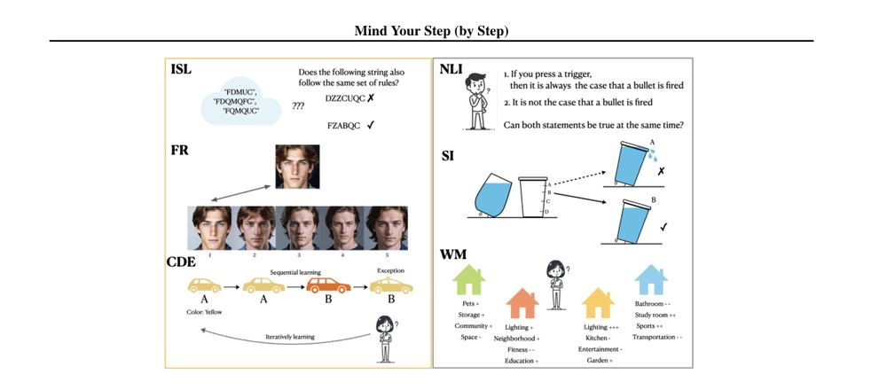
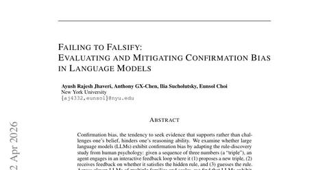

A model's concepts and habits are not ours, so we study it like a subject.
The tasks cognitive science built to study people work on language models too: similarity judgments, association tests, rule-discovery games, risky bets. Run on a model, they show concepts, reasoning habits and failure modes that a partner has to know about.
A language model's idea of a number is partly a string.
Ask a model how similar every pair of integers from 0 to 999 is, and two patterns explain its answers: distance on a log scale, which is how people treat magnitude, and how many digit edits separate the two numbers written out. Together they explain 73% of the variance in six models' judgments; magnitude alone explains 61% and digit edits alone 21%. The string habit has a cost. On a task where the numerically closest option and the string-closest option disagree, Llama-3.1-8B gave the string-based wrong answer 37% of the time with three-digit numbers and 47% with five-digit numbers, while GPT-4o almost never did.

A language model's idea of 12 is partly a magnitude and partly a string.
When a person says 12 is close to 13, they mean size. A language model also reads numbers as strings of digits, so to it 12 can look close to 21. The lab studies where a model's concepts match ours and where they quietly diverge, because a partner that counts differently makes a poor thought partner. In this game you compare numbers by feel, and the page checks whether your choices follow size or shared digits.
Click whichever of the two numbers feels more similar to the highlighted one; the grids fill in as you go.
Your choices: how often you picked the pair as the more similar one
Size: numbers close in value count as similar
Digits: numbers that share digits count as similar
What the paper found
Six language models were asked how similar every pair of integers from 0 to 999 is. Two reference structures explain those judgments: distance on a log scale, which is how people treat magnitudes, and the string-edit distance between the digits. Together they account for 73% of the variance, and magnitude alone for 61%. On a task where the numerically closest option and the string-closest option disagree, Llama-3.1-8B gave the string-based wrong answer 37% of the time with three-digit numbers, and GPT-4o almost never.
What you just did
You produced the same kind of data the paper collected from the models, a similarity structure over numbers, and the page fitted the same two references to it. Five of the sixteen triplets pit magnitude against string (24 against 30 or 4, for instance); those decide which reference wins. In the paper, all six models leaned mostly on magnitude in the default setting, and the smaller Llama model leaned on strings most often when the two disagreed.
Explicitly unbiased models still form biased associations.
Two tests borrowed from social psychology were put to eight language models tuned to give unbiased answers when asked directly. In the word-association test the model sorts words such as wedding or office between two names; in the relative-decision test it writes two profiles and decides who should do which of two tasks. GPT-4 looks unbiased on standard benchmarks, answering "not enough info" 98% of the time on one of them, yet it showed stereotype-consistent associations in 19 of 21 stereotypes across race, gender, religion and health, and biased decisions in 19 of 21 as well, over more than 33,000 prompts. Larger models were more biased than smaller ones, and how biased a model's word associations were predicted how biased its decisions were. Asked to moderate its own outputs, GPT-4 did not detect the bias.
Models test the rules they already believe.
Wason's rule-discovery game, where the player sees 2, 4, 6 and has to find the hidden rule by proposing triples, was given to eleven language models acting as agents, alternating guesses and tests over 45 turns. Confirmation bias was measured as the ratio of tests that would break the model's current guess to tests that fit it, and that ratio tracked success (Spearman 0.75 for models in thinking mode). Success ranged from 6% for Qwen3-8B without thinking to 78% for Gemini 2.5 Pro. A prompt taken from human psychology, think in opposites, improved success in all eleven settings and raised the average rule-discovery rate from 42% to 56%; distilling that behaviour into an 8B model raised its success from 21% to 59%.
Models test the rule they already believe.
Once you have a guess about how something works, it is tempting to run tests that agree with it and skip the tests that could prove it wrong. Language models do this too when they act as agents, and the ones that test against their own guess find the answer more often. The lab cares because a partner that only confirms what it already believes cannot help you catch your own mistakes. Here you start from 2, 4, 6, pick a hypothesis, and propose triples; the page scores each test by whether it could have falsified your guess.
What the paper found
Eleven language models played Wason's rule-discovery game as agents, alternating guesses and tests with yes or no feedback. Confirmation bias was measured as the ratio of tests incompatible with the model's current guess to tests compatible with it, and that ratio predicted success. Success ranged from 6% for Qwen3-8B without thinking to 78% for Gemini 2.5 Pro. A prompt borrowed from human psychology, think in opposites, raised the average rule-discovery rate from 42% to 56%.
What you just did
Each triple you proposed was scored against the hypothesis you had selected at the time: a triple that fits your hypothesis can only confirm it; a triple that breaks it can falsify it. The ratio of the second kind to the first is the paper's measure. Most people, and most models, run far more confirming tests than falsifying ones.
Pick the rule you suspect, propose triples to test it, and name the rule when you are confident. Up to 12 tests.
Reasoning step by step can make a model worse at what makes people worse.
Psychology knows several kinds of task where thinking in words makes people worse, among them learning an artificial grammar, recognising faces, and classifying with a rule that has exceptions. Six such tasks were scaled into benchmarks and run on nine models, answering directly and with chain-of-thought reasoning. Chain of thought hurt on three of them. On grammar learning GPT-4o lost 23.1 points and 8 of 9 models dropped; on face recognition all six vision-language models fell, GPT-4o from 64.0% to 51.2%; on the exceptions task GPT-4o needed 12.5 passes with chain of thought against 2.9 answering directly. On the other three, the human failures come from limits models do not share: models have seen formal logic, lack the motor intuition that words override, and hold many features in a long context, so reasoning mostly helped or made no difference.

Writing the rule down can make you worse at using it.
People can learn a pattern well enough to use it without being able to say what it is, and being made to state it can make them worse at using it. The same thing happens to language models when they are made to reason step by step on tasks of this kind. The lab uses what psychology knows about people to predict where a model's reasoning will help and where it will hurt. In this game you sort strings by feel, then write the rule you think you see and sort again.
Look at the twelve strings, then judge twelve new ones by feel. Do not try to work the rule out yet.
What the paper found
Six kinds of task where thinking in words hurts people were scaled into benchmarks and run on nine models, answering directly and with chain-of-thought reasoning. Chain of thought hurt on three of them: learning an artificial grammar, recognising faces, and classifying with a rule that has exceptions. On grammar learning, GPT-4o with chain of thought lost 23.1 points and 8 of 9 models dropped. On the other three, the human failures come from limits models do not share, such as a small working memory, so reasoning mostly helped or made no difference.
What you just did
You classified strings on feel, then wrote a rule and classified again. In people, stating the rule tends to lower accuracy on this task, because the learned structure is not the stated rule. The paper's point is that the same pattern shows up in language models when they are made to reason step by step, and that the psychology literature predicts where.
A model's picture of a person is more rational than the person.
Asked to predict how a person will choose between two risky bets, on 9,831 problems from the choices13k dataset, five language models predicted a chooser closer to the expected-value maximiser than people are. Reasoning step by step, GPT-4o's predictions tracked expected value at 0.94 and GPT-4-Turbo's at 0.93, where people's own choices track it at 0.48, and the models' agreement with what people actually chose topped out at 0.64. Asked the inverse question, what a person prefers given the choices they made, the same models matched human inferences closely, at 0.97 in the positive context, because people also assume that others are rational. The model's picture of a person is an idealised one.

Models expect you to take the better bet.
Asked to predict what a person will choose between two risky bets, language models mostly predict the option with the higher expected value. Real people take the sure thing, avoid losses and overweight small chances far more often than that. The lab cares because a partner that predicts an idealised you will keep being surprised by the actual you. Take the six bets in the box and see how often your pick matched the expected-value maximiser the models resemble.
What the paper found
Language models were asked to predict human choices on risky-choice problems from the choices13k dataset. When the models reasoned step by step, their predictions correlated with expected value at 0.94 for GPT-4o, against 0.48 for people's actual choices, and their correlation with what people actually chose topped out at 0.64. The models predicted an idealised chooser better than a real one.
What you just did
You made six choices between risky bets, the kind of problem in choices13k. For each one the log shows which option had the higher expected value, which is what the models tended to predict a person would take. The tally is how often you agreed with that idealised chooser. Every disagreement is a case where the models' picture of a person would have missed you.
A model's idea of a number, the associations it forms, the way it tests its own beliefs, what happens to it when it reasons in words, and the person it imagines when asked to predict one: each differs from ours, and each can be measured with a task borrowed from cognitive science. A partner has to know where those differences lie. Mapping them is what this part of the lab's work is for.
Papers on this page


